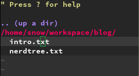
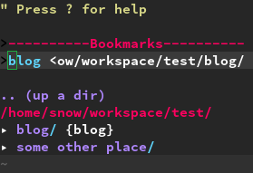
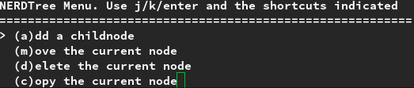

Hey everyone, this time we will cover a plugin called NERDTree. This is the kind of addition, which shows the file system with all it’s files and sub folders. It is a great tool to keep an overview, when working on a project or a big set of files. Because I’m coming from a Sublime background, it was one of the first things I’ve been missing. I was and am still one of those people, who interact with the tree view quite a lot. I also prefer it over tabs and other alternatives, but that is just my personal preference. With Vundle installed from the last post, it is pretty easy to get started with NERDTree. Just add the following line to your plugin list inside your .vimrc
Plugin 'scrooloose/nerdtree'Re-source your .vimrc and call :PluginInstall. Restart vim, just to be save everything is properly set. Now call :NERDTreeToggle and the tree view should pop up on the left side of your vim instance.

NERDTree is just another split view, in which you aren’t able to write anything. It has it’s own shortcuts, to which we come later.
Configuration
The first thing you probably think of, is why would I call :NERDTreeToggle every time I start vim or open a new buffer. To end this struggle, just add the following line into your .vimrc
autocmd VimEnter * NERDTreeThere is one more thing I’m not comfortable with as well. And this is the cursor being in NERDTree after startup. To position the cursor in the code file to the right of NERDTree at the beginning, add the following line to the .vimrc
autocmd VimEnter * wincmd pIf you are working with tabs on a regular basis, you will encounter, that NERDTree isn’t opened in new tabs as well. To mirror our existing NERDTree to other tabs, we need an additional command in our .vimrc
autocmd BufWinEnter * NERDTreeMirrorAn alternative approach is the NERDTree-Tabs plugin, which enables this feature by default, without any configuration effort. The last thing I have configured is a shortcut to focus NERDTree. Because I’m working with split views pretty much at the moment, it is very inconvenient to walk through all the views, until I’m back into NERDTree.
map <F5> :NERDTreeFocus<CR>This maps the control key F5 to the NERDTree focus action. If you prefer another key or a combination you are free to use whatever you are comfortable with.
Usage
With the last part of the configuration, we already stepped into the usage. But what are we able to do, if we called :NERDTreeFocus? The short answer is: pretty much everything you can do with a tree view in Sublime and other editors/IDEs. In this tutorial I only go through the functions I use mostly, but there are plenty more helpful shortcuts and functionalities. For a full reference you can always type in ? while in NERDTree and you get the full list of shortcuts. Press ? again to come back to the tree view. # Navigation Ok, lets start of easy. j and k are also used for navigating up and down like in any other buffer. To jump to the parent directory, you can press p and if you want to go to your root directory you press P. To open a directory press o. This will show all files and sub directories. To close the directory, simply press o again. # Setting the current node and bookmark The number one reason we want to use NERDTree is an overview of our current project or set of files, which is always a sub node in our file system. At the moment I’m navigating through the console to the root directory of my project and open vim there. But there is also a NERDTree way of doing this. You navigate to the root directory of your project in NERDTRee and press cd afterwards. This means “change directory” and it doesn’t have any visual effect. But now every command you type into command-line mode is relative to your chosen root directory and not to the system root. Next thing you may want to do is to only show this directory and hide the rest of your file system. By pressing C you set the underlying directory as the top most visible node. Every time you want to work on your project you need to navigate there. This gets very exhaustive, but NERDTree has a neat feature called bookmarks. You can bookmark directories and files and you are instantly able to open them from a bookmarks list, without navigating there first. To bookmark a node, like our project root, we type in :Bookmark, while NERDTree is focused and the project root is chosen. To open our bookmarks we can press B and now we can type cd, C and o on the chosen bookmark and we are in our project without navigating there first.

If you want to get rid of the bookmark, you just navigate to the bookmark and press D.
Opening files
Now we come to the most important part, actually opening a file. There are many different ways of opening. A normal open in the buffer to the right is done by pressing o. But you are also able to open a file in a new tab[t], in a vertical split[s] or horizontal split[i]. As a site node: o is always overwriting the buffer you were in last. So for example, if you opened some vertical splits and you are in the most right split, you focus NERDTree and open another file by pressing o, the most right buffer will be overwritten.
Modifying nodes in the file system
In the beginning I just used terminal commands like touch/mkdir/mv. With the help of :! I was able to do any CLI command from within vim. Afterwards I needed to refresh the file system by pressing R. But I discovered a much easier way of doing things like these, quite recently. Just go to a node, which you want to modify and press m. Now you get an overview of allowed operations.

These are adding, moving/renaming, copying and removing files or directories. Just choose the shortcut in front of the option and you will be put to the next instruction buffer. Removing needs to be confirmed by a ‘yes’. Adding, moving and copying requires the new path. As an example: if you want to add a new directory you press m on the given node, followed by a and then type in a directory name, followed by a /, otherwise a file would be created. If you are ok with the name, you confirm by pressing Enter. Every modification done from this menu will update your tree view automatically, so there is no need to refresh manually. I hope, this overview will get you started with NERDTree properly. If you have any questions you can ask them in the comment section below.